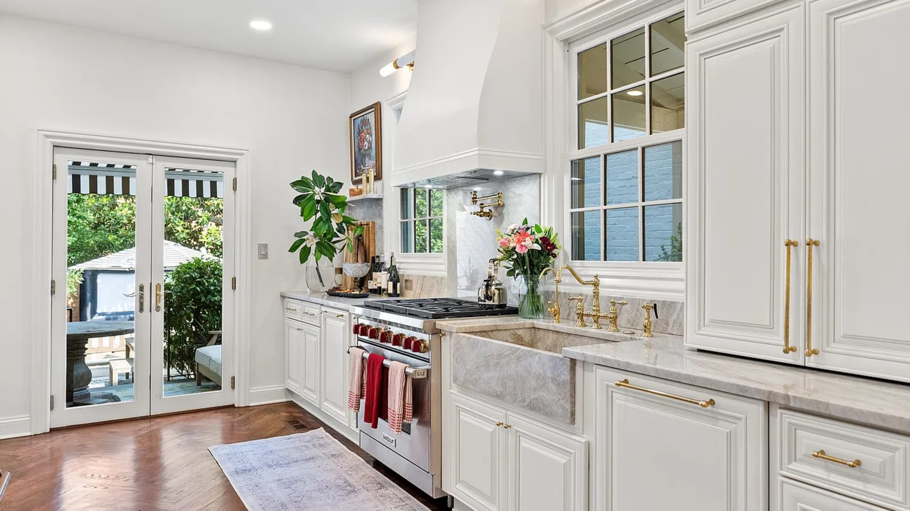

Kitchen Remodeling in Vienna, VA
Vienna is one of Fairfax County's strongest residential markets — Langley High School pyramid, Wolftrap, Church Street corridor. The homes are solid. The kitchens from the 1970s through 1990s often aren't. DFC fixes that with one licensed design-build team.

Vienna Kitchen Remodeling
Vienna's housing stock — and what the kitchens actually need.
Vienna sits primarily in the 22180, 22181 and 22182 zip codes covering the Town of Vienna and surrounding Fairfax County. The housing mix is distinct: 1960s–1970s ranches and split-levels in Cunningham Park and Beulah Road neighborhoods; 1980s–1990s colonials and Transitionals in Wolftrap, Westwood and Tysons Green; and a band of 2000s and newer construction closer to Metro on the eastern edge.
The 1980s–1990s Transitional-style colonials — Vienna's most common renovation project — came standard with a kitchen that was opened from the family room but stopped short: oak raised-panel cabinetry, Corian or laminate countertops, 4-inch tile backsplash and under-cabinet fluorescents. The bones are good. The aesthetic and function are 30 years behind.
For these, we typically replace cabinets entirely (or do full refinish and reface when the box is solid), upgrade to quartz countertops, add a proper subway or large-format tile backsplash, replace under-cabinet lighting with LED strip, add an island if the layout allows, and update the flooring to wide-plank hardwood or LVP throughout the main level. Permits through Fairfax County's land development services — we handle it.
- Oak cabinet replacement or refinishing
- Quartz, quartzite and stone countertops
- Island and peninsula additions
- Tile backsplash and flooring
- Lighting and electrical upgrades
- Open-plan conversions and layout reconfiguration
- Appliance coordination
Vienna neighborhoods
Where we work in Vienna and nearby Fairfax County.
Town of Vienna (22180)
The historic Church Street corridor and older residential streets — Walker Road, Maple Avenue east of Center. Mix of 1940s–1970s construction on smaller lots. Town of Vienna has its own planning department and building permits are filed with the Town, not Fairfax County, for properties within Town limits. We pull Town of Vienna permits regularly.
Wolftrap / Westwood (22181, 22182)
The Langley High School feeder neighborhoods north and west of Vienna proper. Primarily 1980s–1990s colonials on 0.3–0.5 acre lots. Strong resale values justify full kitchen renovations with premium materials — quartz, custom cabinetry, hardwood floors. These are the most common Vienna kitchen renovation projects we handle.
Oakton (22124)
Oakton sits just south and east of Vienna and is often searched together. Similar 1980s–1990s housing stock with slightly larger lots. Same permitting jurisdiction — Fairfax County. We work Oakton kitchens regularly as part of the Vienna service area.
Process
Vienna kitchen renovation — from first call to finished space.
On-site evaluation
Walk your kitchen, assess the layout, discuss goals and realistic budget. No obligation, no pressure.
Design and selection
Cabinet layout, countertop selection, tile, lighting plan. 3D rendering for full kitchen overhauls. Fixed-price proposal.
Fairfax County permit
We submit to Fairfax County land development (or Town of Vienna if applicable) and track approvals.
Build
Demo, rough-in, cabinets, countertops, tile, electrical, flooring. Clean site, direct communication, on schedule.
Final walkthrough
Punch list cleared before final payment.
Vienna and nearby
We serve Vienna, Oakton and surrounding Fairfax County communities.
Vienna kitchen remodel?
Get a free on-site evaluation from a licensed Vienna-area contractor.
4.8★ Google rating, Class A licensed. We know Fairfax County and Town of Vienna permits, and we know the housing stock.